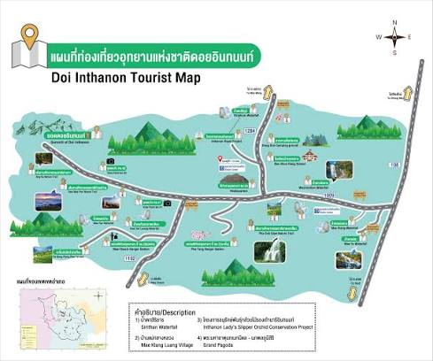

ดอยอินทนนท์ตั้งอยู่ในอุทยานแห่งชาติดอยอินทนนท์ อำเภอจอมทอง จังหวัดเชียงใหม่ ห่างจากตัวเมืองเชียงใหม่ไปทางทิศตะวันตกเฉียงใต้ประมาณ 90 กิโลเมตร ใช้เวลาเดินทางโดยรถยนต์ประมาณ 1.5-2 ชั่วโมง ถนนลาดยางคุณภาพดีคดเคี้ยวขึ้นไปตามภูเขาตลอดเส้นทาง เหมาะสำหรับเดินทางด้วยรถยนต์ส่วนตัวหรือทัวร์แบบเช่ารถพร้อมคนขับ

🖼️แผนที่เส้นทางขึ้นดอยอินทนนท์ดอยอินทนนท์มีความสูงจากระดับน้ำทะเล 2,565 เมตร ได้รับการขนานนามว่าเป็น "หลังคาแห่งสยาม" เนื่องจากเป็นจุดที่สูงที่สุดในประเทศไทย อากาศบนยอดดอยเย็นจัดตลอดทั้งปี โดยเฉพาะช่วงเดือนธันวาคมถึงกุมภาพันธ์อุณหภูมิอาจลดลงใกล้ 0 องศาเซลเซียส มีน้ำค้างแข็งเกาะตามยอดหญ้าให้เห็นในบางวัน
ภายในอุทยานมีจุดท่องเที่ยวสำคัญหลายแห่ง ได้แก่ พระมหาธาตุนภเมทนีดลและนภพลภูมิสิริ เจดีย์คู่สีขาวและสีแดงที่สร้างขึ้นเพื่อเฉลิมพระเกียรติ จุดชมวิวยอดดอย น้ำตกแม่ยะและน้ำตกวชิรธาร เส้นทางศึกษาธรรมชาติอ่างกาที่เป็นป่าพรุบนภูเขาหนึ่งเดียวในไทย และหมู่บ้านขอบด้งซึ่งเป็นที่อยู่ของชาวเขาเผ่ากะเหรี่ยงและม้ง
 🖼️รูปน้ำตกวชิรธาร
🖼️รูปน้ำตกวชิรธาร
อุทยานเปิดให้เข้าชมทุกวันตั้งแต่เวลา 05:30-18:30 น. มีค่าธรรมเนียมเข้าอุทยานสำหรับผู้ใหญ่และเด็ก แยกอัตราคนไทยและต่างชาติ รวมถึงค่าธรรมเนียมรถยนต์ที่จุดตรวจทางเข้า แนะนำให้เตรียมเสื้อกันหนาวเนื่องจากอุณหภูมิเปลี่ยนแปลงรวดเร็วตามความสูง